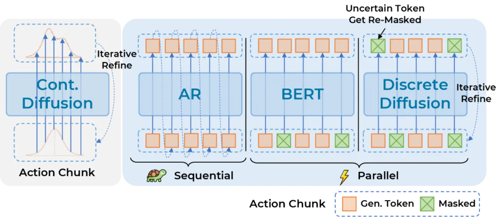
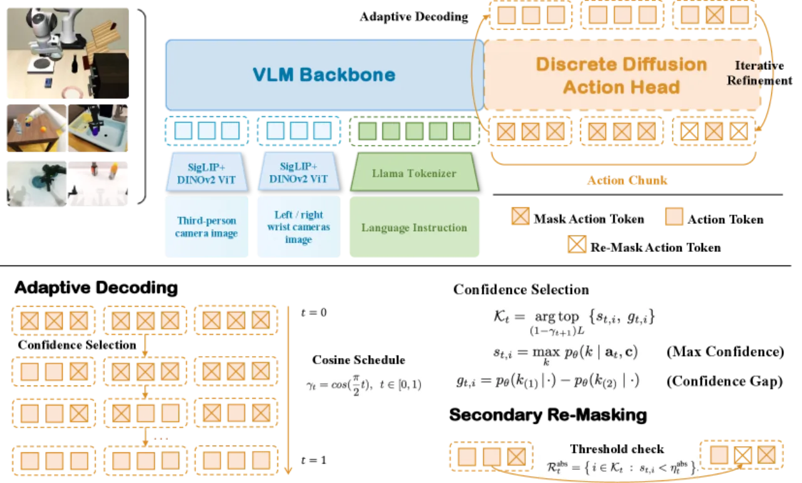
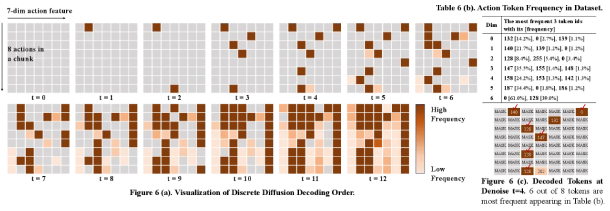
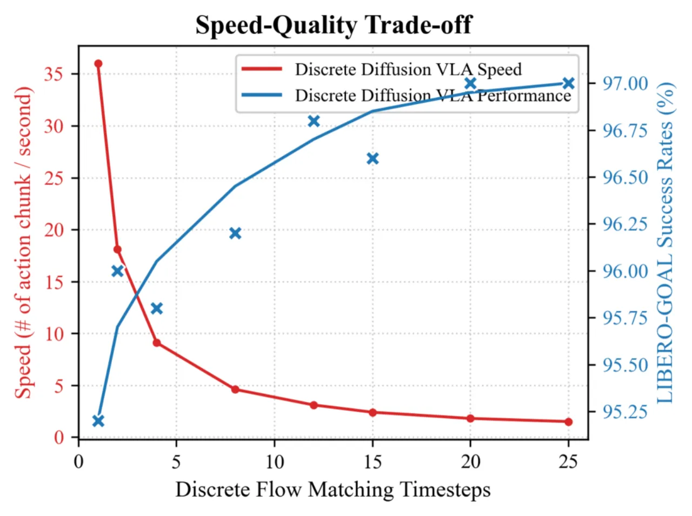

现有 VLA 模型要么以固定从左到右的顺序自回归生成动作（性能差、速度慢），要么在主干之外附加独立的扩散头（割裂信息通路、损伤视觉语言能力）。本文提出 Discrete Diffusion VLA，在统一的 transformer 主干内对离散动作块进行掩码扩散建模，通过 Adaptive Decoding 和 Secondary Re-Masking 实现渐进式精炼，在保留视觉语言能力的同时达到 SOTA 性能。
当前 VLA 动作解码范式面临两大根本性缺陷：自回归方法存在从左到右的累积误差与推理效率低下问题；而将独立扩散头附加于主干之外的方式，则割裂了信息通路，并损害了视觉语言预训练能力。
"This design not only complicates policy training but also degrades the pretrained vision-language capabilities, which represents a critical issue we address in this work."

核心洞察在于：离散扩散与大语言模型的预训练目标（交叉熵）天然一致——训练时均以掩码 token 的预测为优化目标，因此不需要引入竞争性梯度信号，即可在同一主干内同时保留视觉语言推理能力和动作生成能力。
Discrete Diffusion VLA 以 Prismatic-7B（Llama 2 主干）为基础，将机器人动作离散化为 token 序列，在统一 transformer 内以掩码扩散方式迭代精炼，并通过 Adaptive Decoding 和 Secondary Re-Masking 在推理阶段实现自适应去噪顺序与错误纠正。

末端执行器动作（平移 3 维、旋转 3 维、夹爪 1 维）通过分位数分箱离散化：每个连续维度划分为 256 个 bin（采用第 1—99 百分位以剔除异常值），夹爪单独作二值处理。每个时间步产生 D_act = 7 个 token，动作块长度 H 个时间步则产生 L = H × D_act 个 token。
训练时随机采样掩码比例 γ_t，将 γL 个动作位置替换为 [MASK]，以交叉熵损失预测原始 token：
ℒ_CE(θ) = −∑i∈ℳ_γt log p_θ(a0,i | ã_t, c)
该目标与预训练 VLM 的优化目标完全一致，从而保留视觉语言能力，无需引入竞争性梯度信号。动作 token 的 attention 从因果改为双向，使每个动作位置均可 attend 到所有视觉、语言和动作 token。
推理时，从全掩码（γ₁ = 1）出发，迭代 T 步：
此策略实现"instance-wise ranking"——对当前情境更确定的动作维度（如夹爪开合）优先解码，不确定的维度保留到后续迭代。
为防止低置信度 token 被错误固化，引入绝对阈值检测：若已承诺位置的置信度 s_{t,i} < η_t^abs（单调递增阈值），则将该 token 重置为 [MASK] 重新预测，实现"多迭代一致性与鲁棒错误纠正"。

在 LIBERO、SimplerEnv-Fractal（Google Robot）、SimplerEnv-Bridge（WidowX）等模拟基准及 AgileX Cobot Magic 真实机器人上评估，与 OpenVLA、pi0、pi0-FAST、OpenVLA-OFT、GR00T-N1 等方法对比。
| 方法 | Spatial | Object | Goal | Long | 平均 |
|---|---|---|---|---|---|
| OpenVLA (AR, 离散) | 84.6% | 88.4% | 79.2% | 53.7% | 76.5% |
| OpenVLA-OFT L1 (连续) | 97.0% | 99.6% | 98.0% | 93.6% | 97.1% |
| pi0-FAST (离散 AR) | 94.6% | 97.8% | 94.2% | 87.8% | 93.6% |
| Discrete Diffusion VLA（本文） | 97.2% | 99.4% | 96.8% | 92.2% | 96.4% |
在所有离散方法中性能最优；与最强连续方法 OpenVLA-OFT L1 (97.1%) 相差仅 0.7%。
| 方法 | 语言 OOD 性能下降 | 视觉 OOD 性能下降 |
|---|---|---|
| OpenVLA-OFT L1 (连续) | 3.2%↓ | 23.2%↓ |
| 并行离散解码 (BERT-style) | 8.0%↓ | 22.6%↓ |
| 独立扩散头 | 2.4%↓ | 29.0%↓ |
| Discrete Diffusion VLA（本文） | 0.8%↓ | 20.4%↓ |
| 方法 | Fractal Visual Matching | Fractal 平均 | Bridge 整体 |
|---|---|---|---|
| pi0 | 58.8% | — | 40.1% |
| pi0-FAST | 61.9% | 60.5% | 48.3% |
| OpenVLA-OFT | 63.0% | 54.3% | — |
| GR00T-N1 | — | — | 49.5% |
| Discrete Diffusion VLA（本文） | 71.2% | 64.1% | 54.2% |

| 方法 | 延迟（ms/chunk） | 频率（Hz） | NFE |
|---|---|---|---|
| OpenVLA (AR, 56 步) | 136.2 | 7.34 | 56 |
| 连续扩散（12 步） | ~69 | ~14.5 | 12 |
| Discrete Diffusion VLA（12 步） | 68.8 | 14.53 | 12 |
在 LIBERO-Goal 上的消融：
在 AgileX Cobot Magic 双臂机器人上，每项任务各测试 15 次（控制频率 9.69 Hz）：
作者明确指出："Our multi-step iterative decoding is slower than single-pass decoding by design。"12 步去噪虽比 AR 快 2×，但仍比单次前向传播（如并行 BERT-style 解码）开销更大，在对延迟极度敏感的应用场景中存在限制。
作者明确指出："variable-length action tokenization schemes are incompatible with discrete diffusion。"当前方法仅支持固定长度动作块（fixed-length chunk），无法直接应用于需要动态时间对齐的任务或变长指令跟踪场景。
256-bin 分位数量化在有限数据下可能引入量化误差，且 bin 数量是超参数；对于精度要求极高的灵巧操作任务（如穿针引线），离散化精度是否足够尚未充分验证。
真实机器人实验仅在 AgileX Cobot Magic 单一平台、2 项任务、各 15 次试验下进行，泛化到更多平台、更长任务链和非结构化环境的能力有待验证。